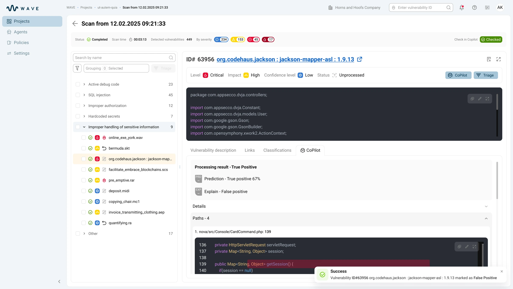

Wave: triaging scan results
An AI triage module for vulnerabilities: check status, probability and explanation — the final decision stays with the analyst.
Context
In enterprise AppSec, every scan left the analyst with hundreds of findings — real vulnerabilities mixed with false positives. Each one had to be opened and checked against its component, paths and context in the code. On large projects, triaging a single scan stretched into hours, and as the volume grew so did the cost of a mistake: miss a real vulnerability, or burn a day on a false one.
Design challenge
The main risk was turning AI into yet another “black box.” The interface had to speed up triage while showing what was checked, why AI decided so and where the conclusion can be confirmed.

My role
I designed the UX of AI triage: check statuses at the project, scan and finding level, the analysis-mode choice and the AI verdict card. I worked with the ML team, PM and security analysts to translate model signals into a clear working interface.
Goals
- Break the AI check into states for the project, the scan and an individual finding
- Design the Full scan, Prediction only and Explanation only modes
- Build the AI verdict card with prediction, explanation and signal conflict
- Embed the triage action into existing statuses, decision history and code review
Key decisions
How to show the AI verdict: one badge or two signals. I chose to show probability and explanation separately and to keep any conflict between them visible, so the analyst checks the logic instead of taking the conclusion on faith. I rejected a single “vulnerable / not vulnerable” badge: it hides uncertainty, turns AI into a black box and invites blind agreement.
AI check depth: always a full analysis or a choice of mode. I chose three modes — Full scan, Prediction only, Explanation only — right from the scan row, because fast triage and deep review are different jobs. I rejected a mandatory full scan for every finding: across hundreds of findings it is expensive in time and redundant for obvious cases.
Who makes the final call: AI or a human. I chose to keep the decision with the analyst: AI prepares the verdict and evidence, but a human confirms, rejects or ignores the finding, and that is recorded in the decision history. I rejected auto-closing findings by a probability threshold: it can't be defended in an audit, and a single false negative is a missed real vulnerability.
Solution
One platform — a split-screen workspace instead of page-to-page navigation: the report list stays on the left while details and actions open on the right, so the analyst triages findings without losing the overall context. The left panel shows progress, prediction, issue count and date per report; the right panel brings together recommendations, severity, the vulnerability list, evidence and triage actions.
AI check status at the project and per-scan level: the scans table immediately shows where the AI check hasn't run, where analysis is in progress, what is completed and where the check was interrupted.
Choosing the check depth: Full scan, Prediction only, Explanation only: from a scan row the team picks a full check, prediction only or explanation only. This way the interface supports both fast triage and deep review.

Prediction and explanation: two signals instead of one verdict: in the CoPilot tab the verdict isn't hidden in a single badge — the analyst sees the probability, the explanation and paths to code. If the signals diverge, the conflict stays visible.


Outcome
- ≈ −60% time to triage a large scan — from ~6–8 h to ~2–3 h: prediction and explanation filter out false positives before opening the code.
- ≈ 2 in 3 findings closed without opening the code — probability, explanation and paths sit side by side, so the obvious ones are closed straight on the verdict.
- 100% of decisions are traceable: every verdict is confirmed, rejected or ignored by a human based on the explanation, paths and the overall decision trail — the triage can be defended in an audit.